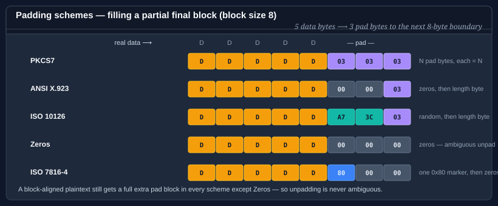
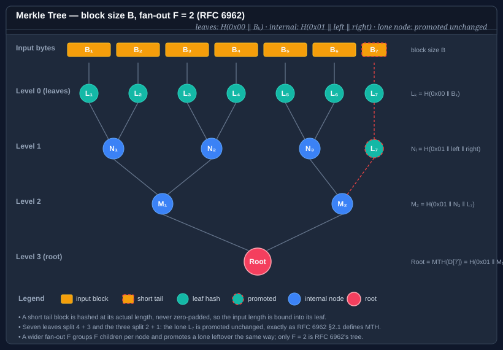

Bodu.Security.Cryptography — Core concepts
This page is the vocabulary the rest of the documentation assumes. Read it once before the getting-started samples or the guides, and refer back whenever a term feels imprecise.
Part of the Hashing & Cryptography topic.
For the high-level shape of the library, the algorithm taxonomy, and the I/O model, start with the introduction.
Adversary model
Every algorithm in this library meets a formal adversary model: it must be computationally infeasible for an attacker — even one who knows the algorithm, observes many inputs and outputs, and chooses inputs adaptively — to forge a tag, invert a digest, or find a colliding pair. This is the load-bearing contract that separates Bodu.Security.Cryptography from Bodu.IO.Hashing. The latter ships fingerprints and checksums (CRC, Fletcher, Adler, FNV, CityHash) that carry no adversary model and must never be used where an attacker can choose the input.
Confidentiality, integrity, authenticity
Three independent security properties; each primitive provides a different subset:
| Property | What it guarantees | Provided by |
|---|---|---|
| Confidentiality | An attacker cannot recover plaintext from ciphertext without the key. | Block cipher in a confidentiality mode, stream cipher, AEAD. |
| Integrity | Any modification of the protected message is detected. | Cryptographic hash (over a known input), MAC, AEAD. |
| Authenticity | The message came from a holder of the key. | MAC, AEAD. |
A raw cipher protects confidentiality only — a flipped ciphertext byte still decrypts, just to corrupted plaintext. Combine encrypt-then-MAC, or use an AEAD construction, to get all three in one pass.
Cryptographic hash vs. keyed hash vs. cipher
Three structural roles, easy to confuse:
- Cryptographic hash — keyless, one-way. Compresses arbitrary input to a fixed (or extendable) digest with pre-image, second-pre-image, and collision resistance. Use for content addressing, integrity over a known input, and signature inputs. Provides integrity only when the digest itself is transmitted via an authenticated channel.
- Keyed hash / MAC — secret key plus message yields an authentication tag no one can forge without the key. Provides integrity and authenticity, not confidentiality.
- Cipher — reversible transformation under a key. Provides confidentiality. By itself a cipher does not provide integrity or authenticity; pair it with a MAC or use AEAD.
Both keyed hashes and ciphers take a key, but they serve opposite purposes — a cipher transforms plaintext to ciphertext and back without summarising; a MAC summarises a message into a fixed-size tag without encrypting.
Block cipher
A block cipher is a keyed permutation over a fixed-size block — Camellia, Twofish, and Serpent operate on 128-bit blocks; Threefish on 256, 512, or 1024 bits; Blowfish and Skipjack on 64 bits. The cipher itself is a pure primitive: it encrypts exactly one block to exactly one block. To encrypt a message longer than one block, or shorter, or of an unaligned length, the cipher must be combined with a mode of operation (which sequences the calls) and usually a padding scheme (which aligns the final block).
Bodu exposes the raw primitive via IBlockCipher; the SymmetricAlgorithm-derived facades (Camellia, Twofish, Threefish512, …) compose a block cipher with a mode and padding.
Stream cipher
A stream cipher generates a deterministic keystream from a key and a nonce, then XORs the keystream over the data. The output has the same length as the input — no padding, no block alignment. ChaCha20, XChaCha20, Salsa20, XSalsa20, Rabbit, and Hc128 are stream ciphers in this library.
Two consequences follow from the XOR construction: stream ciphers are self-inverse (encrypt and decrypt are the same operation), and they provide raw confidentiality only — there is no integrity check, and reusing a (key, nonce) pair leaks the XOR of two plaintexts. Always pair a stream cipher with a MAC (e.g. Poly1305), or prefer an AEAD construction when integrity matters.
The base class for these algorithms is SymmetricStreamAlgorithm. It is deliberately not a SymmetricAlgorithm — there is no block mode, padding, or IV — but a standalone IDisposable base exposing Key, Nonce (with NonceSize), GenerateKey() / GenerateNonce(), and CreateTransform(); CreateEncryptor() / CreateDecryptor() are aliases of the same self-inverse transform.
Mode of operation
A mode of operation turns a one-block-at-a-time block cipher into something that can encrypt arbitrary-length messages. The mode sequences the cipher calls, threads state between them, and decides how plaintext blocks combine with the cipher output.

| Mode | Distinguishing property |
|---|---|
| ECB | Each block encrypted independently. Identical plaintext blocks produce identical ciphertext — leaks structure; rarely the right choice. |
| CBC | Each plaintext block XORed with the previous ciphertext block before encryption. Requires an unpredictable IV; serial encrypt, parallel decrypt. |
| CFB | Cipher output XORed into the plaintext, then fed back. Self-synchronising; serial. |
| OFB | Cipher iterates on itself to produce a keystream; XORed over plaintext. Parallel after keystream generated; bit-flip propagates one-to-one. |
| CTR | Cipher applied to an incrementing counter to produce a keystream. Fully parallel; nonce-uniqueness critical. |
CipherModeKind has ten members: the BCL-compatible ECB, CBC, CFB, OFB, and CTS, plus CTR, XTS, OCB, EAX, and SIV. The standard SymmetricAlgorithm facades expose mode selection via the BlockMode property, which routes through BlockCipherModeFactory and therefore accepts only the five classic modes (ECB, CBC, CFB, OFB, CTR); CTS and XTS are built directly as CtsModeTransform / XtsModeTransform, and OCB / EAX / SIV name the AEAD transforms. See the cipher modes guide for a per-mode walk-through with diagrams.
Padding
Block-cipher modes that consume whole blocks (ECB, CBC) need a padding scheme to align a partial final block to the block boundary. Each scheme defines a byte pattern the decryptor can reliably strip on the way out.

| Scheme | Type | Final-block bytes |
|---|---|---|
| Pkcs7Padding | PKCS7 |
n bytes, each equal to n (the pad length). |
| Ansix923Padding | ANSIX923 |
n-1 zero bytes followed by n. |
| Iso10126Padding | ISO10126 |
n-1 random bytes followed by n. |
| ZeroPadding | Zeros |
All zero bytes — length not encoded; only safe for fixed-length records. |
| Iso7816_4Padding | ISO7816_4 |
A single 0x80 followed by zero bytes. |
| NoPadding | None |
Input must already be a block-aligned multiple. |
PaddingModeKind mirrors System.Security.Cryptography.PaddingMode and adds ISO7816_4. Selection is via the BlockPadding property on the SymmetricAlgorithm facade or via PaddingFactory. See the padding guide.
Initialization vector (IV) and nonce
Both are public, single-use inputs to a cipher; the distinction is what uniqueness and unpredictability they demand.
- An initialization vector (IV) is the per-message starting state of a feedback mode (CBC, CFB, OFB). It must be unpredictable — choose it uniformly at random per message — because predictable IVs in CBC enable chosen-plaintext attacks.
- A nonce ("number used once") is the per-message public input to a counter mode (CTR), an AEAD construction (GCM, CCM, OCB, EAX), or a stream cipher (ChaCha20, Salsa20). It must be unique within the lifetime of the key. It does not need to be unpredictable; a counter is acceptable.
On the block-cipher facades both appear on the IV property, and the contract of the mode dictates which requirement applies; the stream ciphers carry theirs on the Nonce property of SymmetricStreamAlgorithm instead. The extended-nonce stream ciphers (XChaCha20, XSalsa20) widen the nonce to 192 bits so a random nonce per message is safe; the originals (96-bit ChaCha20, 64-bit Salsa20) need either a counter or a much tighter key-rotation policy.
AEAD (Authenticated Encryption with Associated Data)
AEAD is a single primitive that provides confidentiality, integrity, and authenticity in one pass — encrypt-then-authenticate, with the authentication tag produced as part of the same operation that produces the ciphertext.

The inputs are a key, a nonce, the plaintext, and optional associated data (AAD) — headers or framing that must be authenticated but not encrypted. The output is the ciphertext (same length as the plaintext) and an authentication tag.
The decrypt operation takes the same key, nonce, ciphertext, AAD, and tag, and returns either the plaintext or a tag-mismatch failure — there is no "decrypt and check tag separately" path that can be mis-sequenced.
Bodu exposes AEAD two ways:
- AsconAead128 — a complete AEAD primitive (NIST SP 800-232) that does not use a separate block cipher.
- AEAD mode transforms over an IBlockCipher — pair AES (via AesBlockCipher) with GcmModeTransform, CcmModeTransform, OcbModeTransform, EaxModeTransform, SivModeTransform, or GcmSivModeTransform. The contract these implement is IAeadBlockCipherModeTransform.
See the AEAD modes guide for the per-mode contract and per-message lifecycle.
Tag
An authentication tag is the fixed-length output a MAC or AEAD construction emits alongside (or instead of) the ciphertext. The decrypt / verify operation recomputes the tag and compares in constant time; any modification of the ciphertext, AAD, key, or nonce produces a mismatch and a verification failure.
Tag length is a security parameter: GCM tags are typically 128 bits; truncating to 64 or 96 bits weakens the forgery bound proportionally. Bodu's AEAD transforms expose tag length on a per-transform basis — prefer the maximum the algorithm offers unless interoperating with a fixed wire format.
Tweakable cipher
A tweakable block cipher takes an extra public input — the tweak — alongside the key, and produces a different permutation for each tweak value. The tweak is not a secret; its purpose is domain separation without re-keying.
The canonical example is XTS-mode disk encryption, where each disk sector encrypts under the same key but a different tweak (the sector number), so identical plaintext written to two different sectors produces different ciphertext, and a sector cannot be moved without detection.
Bodu's tweakable surface is TweakableSymmetricAlgorithm, which extends SymmetricAlgorithm with Tweak and GenerateTweak(). The Threefish family (Threefish256, Threefish512, Threefish1024) is the headline tweakable cipher.
Cryptographic-hash output shapes
Cryptographic digests in this library come in three structural shapes:
- Plain digest — fixed-length output. Tiger, Whirlpool, Skein256 / Skein512 / Skein1024, Blake2b / Blake2s, CubeHash, Snefru128 / Snefru256, AsconHash256 / AsconHashA256.
- Extendable-output function (XOF) — caller chooses the output length at finalize time. Shake, AsconXof128, and AsconCxof128. (Blake3 is tree-structured internally but exposes only its fixed 256-bit digest here.)
- Tree — input split into leaves, leaves hashed in parallel, levels reduced to a root. Blake3 uses an internal tree; MerkleTree exposes an explicit RFC 6962 tree over any inner
HashAlgorithm, with inclusion and consistency proofs.
MAC vs. one-time authenticator
Both are keyed hashes that emit an authentication tag — the difference is how many messages a single key can safely authenticate.
- A MAC (message authentication code) is a pseudorandom function: one key can authenticate many messages. SipHash64 and SipHash128 are MACs in this sense — bind the key once, call
ComputeHashover each message. - A one-time authenticator must use a fresh key for every message. Poly1305 is a one-time authenticator: it is provably secure when the key is used exactly once, and trivially broken if the same key authenticates two different messages.
The distinction matters because Poly1305 is normally paired with ChaCha20 (or an equivalent stream cipher) precisely so the cipher can derive a per-message one-time Poly1305 key from (K, nonce). Never reach for Poly1305 with a long-lived key — use SipHash or an AEAD construction.
Sponge construction
A sponge is an alternative to the Merkle–Damgård design used by classical digests. It maintains a fixed-size internal state and alternates two phases: absorb (XOR input blocks into the rate portion of the state, permute) and squeeze (read output blocks from the rate, permute). The same construction can be tuned to produce a fixed digest, an XOF, or an AEAD by adjusting the rate, capacity, and absorb / squeeze schedule.
The ASCON family (NIST SP 800-232) is sponge-based, which is why AsconHash256, AsconXof128, and AsconAead128 all share a single permutation and a single set of correctness arguments.
Merkle tree
A Merkle tree turns an ordered list of entries into a single root hash, and — because it is built bottom-up — lets anyone prove that one entry sits under that root using a logarithmic number of hashes rather than the whole input. That inclusion proof is the only reason to pay for a tree instead of a flat digest.

MerkleTree implements RFC 6962 §2.1 precisely over any inner HashAlgorithm the caller supplies as a Func<HashAlgorithm> (SHA-256, a Bodu digest, anything else). Precision matters because several plausible-looking constructions give different roots for the same input, and a divergent root verifies nowhere:
- a tree of n entries splits at
k, the largest power of two strictly below n — three entries split 2 + 1, never 1 + 2; - a subtree holding one entry contributes its leaf hash unchanged, never re-hashed as a one-child node;
- leaves are
H(0x00 ‖ entry)and internal nodesH(0x01 ‖ left ‖ right)— the domain separation that stops a leaf preimage colliding with a node preimage (the second-preimage attack), and the reason RFC 6962 needs no padding step and is immune by shape to the duplicate-last-leaf forgery of CVE-2012-2459; - the empty tree's root is
H(), the hash of zero bytes, not an exception.
The same tree is reached from three input shapes — a list of entries, a stream or buffer cut into fixed-size blocks, or a write-time accumulator (MerkleBlockAccumulator) fed from the same Append calls that feed a flat digest — and the root is the same however the bytes arrive. Leaf hashing can be spread across cores with the maxDegreeOfParallelism constructor option without changing the tree. Fan-out is the number of children per internal node; 2 is RFC 6962's tree, and a wider fan-out is an explicit non-RFC mode on which the proof members throw.
Two proof shapes answer different questions. An inclusion (audit) proof answers "is this entry in this tree?"; a consistency proof answers "is this earlier tree a prefix of this later one?" — the property an append-only log must have. Every verifier is total: malformed input returns false rather than throwing, because a verifier sits directly behind bytes an adversary chose.
One sharp edge is worth knowing before you use it. VerifyInclusion's treeSize is trusted input — a four-entry tree's path for entry 0 walks to the same head a three-entry tree's first path does, so a verifier told either size accepts, and a party being examined can understate its size to exempt its last entries from challenge. That is RFC 6962 as specified. BindRoot closes it by folding the length into the published root as H(0x02 ‖ uint64_be(length) ‖ root), and VerifyInclusionBound / VerifyBlockInclusion derive the size from that instead of accepting one.
See the Merkle trees and proofs guide for entry and block modes, the accumulator, the logarithmic streaming fold, parallel leaf hashing, and the diagnostics recorder.
Public-key (asymmetric) cryptography
Everything above uses a single secret key shared by both parties. Public-key (asymmetric) primitives instead use a key pair: a public key that can be published freely and a private key that never leaves its owner. This splits cleanly into three roles:
- Signature — the holder of the private key signs a message; anyone with the public key verifies it. Provides integrity and authenticity without a shared secret. Ed25519 is the classical scheme (RFC 8032); MLDsa65 is its post-quantum counterpart (FIPS 204).
- Key agreement — two parties exchange public keys and each derives the same shared secret, which is never transmitted. X25519 is the elliptic-curve Diffie-Hellman function (RFC 7748).
- Key encapsulation (KEM) — the sender generates a fresh secret and encapsulates it to the recipient's public key, transmitting a ciphertext the recipient decapsulates back to the same secret. MLKem768 is the post-quantum module-lattice KEM (FIPS 203).
The post-quantum schemes (ML-DSA, ML-KEM) defend against the "harvest now, decrypt later" threat: an adversary who records today's traffic could decrypt it once a large-scale quantum computer exists. Data with a long confidentiality horizon should be protected with a post-quantum (or hybrid) scheme now, even though no such computer exists yet.
Every one of these primitives produces and consumes the raw key encodings defined by its standard — the fixed-length byte arrays of RFC 7748 / RFC 8032 and FIPS 203 / FIPS 204. Key formats differ by family: Ed25519 / X25519 carry the RFC 8410 PKCS#8 / SubjectPublicKeyInfo DER containers (ImportPkcs8PrivateKey / ImportSubjectPublicKeyInfo and the TryExport… pair) and, through the base-class helpers, RFC 7468 PEM; the ML-KEM / ML-DSA types expose raw FIPS encodings only and throw on the ASN.1 members. Encrypted PKCS#8 is out of scope everywhere.
Hybrid public-key encryption (HPKE)
A KEM establishes a secret, not an encrypted message. HPKE (Hybrid Public Key Encryption, RFC 9180) composes the three building blocks — a KEM, a KDF, and an AEAD — into a single "seal this payload so only the holder of a given public key can read it" operation. The sender needs only the recipient's public key; the output is an encapsulated key plus an AEAD ciphertext and tag. Hpke implements the base mode; HpkeSuite selects the KEM / KDF / AEAD combination. It is the encryption layer beneath TLS Encrypted Client Hello, MLS, and Oblivious HTTP.
Key derivation and password hashing
A key-derivation function (KDF) turns one secret into usable key material. The right KDF depends entirely on the entropy of the input:
- High-entropy input — a Diffie-Hellman shared secret, a KEM output, a master key. Use an extract-and-expand KDF: Hkdf (RFC 5869) stretches it into one or more context-bound keys, each labelled with application-specific
info. HKDF is fast by design and must never be fed a password. - Low-entropy input — a human-chosen password. Use a memory-hard password hash: Argon2id (RFC 9106, the current recommendation) or Scrypt (RFC 7914). These are deliberately slow and memory-hungry so that offline guessing on custom hardware (GPUs, FPGAs, ASICs) is expensive. Always combine with a per-password salt.
Reaching for the wrong one is a security bug: an HKDF over a raw password offers almost no protection against guessing, and a memory-hard hash over a high-entropy secret only wastes resources.
BCL surface
Every primitive plugs into the standard BCL contracts so existing crypto code adopts these types without changes:
- SymmetricAlgorithm — base class for the block ciphers and tweakable ciphers (through Bodu's ExtendedSymmetricAlgorithm, which adds
BlockMode/BlockPadding). Lifecycle: configureKey,IV, mode and padding; callCreateEncryptor()/CreateDecryptor()or the BoduEncrypt/Decryptextension methods. The stream ciphers are notSymmetricAlgorithms — they derive from SymmetricStreamAlgorithm, a standaloneIDisposablebase withKey,Nonce,GenerateNonce(), andCreateTransform(). - HashAlgorithm — base class for the cryptographic digests and
Shake. Lifecycle: one-shotComputeHash, orTransformBlock…TransformFinalBlockthen readHash(the HashAlgorithmExtensions addAppendData/VerifyHash). The ASCON XOFs (Absorb/Squeeze/GetHash) and the Merkle tree hashes (factory-constructed, one-shotComputeHash) use their own surfaces. - KeyedBlockHashAlgorithm — Bodu's base for the MACs (SipHash, Poly1305, and Skein's MAC mode): a
HashAlgorithmwith a requiredKeyproperty. The library does not route through the BCLKeyedHashAlgorithm. - AsymmetricAlgorithm — base class for the public-key schemes (Ed25519, X25519, ML-KEM, ML-DSA). Lifecycle:
Create(),GenerateKey(), export the public half, then sign / verify, agree, or encapsulate. Key formats differ by family:Ed25519/X25519carry the RFC 8410 PKCS#8 / SubjectPublicKeyInfo DER containers (ImportPkcs8PrivateKey/ImportSubjectPublicKeyInfoand theTryExport…pair) and, through the base-class helpers, RFC 7468 PEM; the ML-KEM / ML-DSA types expose raw FIPS encodings only and throw on the ASN.1 members. Encrypted PKCS#8 is out of scope everywhere.
Bodu extends the BCL surface in two places:
- IBlockCipher — a one-block-at-a-time primitive contract, implemented by every block cipher in the library and by AesBlockCipher (the bridge that lets AES feed the AEAD mode transforms).
- TweakableSymmetricAlgorithm — extends
SymmetricAlgorithmwithTweakandGenerateTweak()for the Threefish family.
Key size and block size
- Key size is reported via
SymmetricAlgorithm.LegalKeySizesand selected viaKeySize(bits). The Bodu facades expose only the legal sizes their algorithm supports — e.g. Camellia accepts 128 / 192 / 256, ChaCha20 accepts 256, Threefish-512 accepts only 512. - Block size is reported via
BlockSize(bits). Block-cipher facades expose the algorithm's native size; stream ciphers report a nominal value but do not gate input length.
Generate keys, IVs, nonces, and tweaks via the BCL-style GenerateKey() / GenerateIV() methods on the facade (and GenerateTweak() on tweakable algorithms), or via System.Security.Cryptography.RandomNumberGenerator.GetBytes.
Disposable and single-use
Every algorithm facade implements IDisposable and zeroes its sensitive state — keys, IVs, nonces, tweaks, sponge state — on disposal. Always using an algorithm instance.
The ICryptoTransform objects returned from CreateEncryptor() / CreateDecryptor() (and the AEAD mode transforms) are single-use per message. They carry internal state that finalises in TransformFinalBlock (or in the encrypt / decrypt call on an AEAD transform); calling them again after finalisation is undefined. The samples in getting started construct a fresh transform on the encrypt side and another on the decrypt side — this is the contract, not over-cautious code.
Where to go next
- Introduction — namespaces, algorithm taxonomy, the I/O model, scenarios.
- Getting started — install + minimal sample for each subfamily.
- Bodu.Security.Cryptography guides — deep-dive walk-throughs for cipher modes, padding, AEAD, hashing, Merkle trees.
- For non-cryptographic checksums and fingerprints (CRC, Fletcher, Adler, FNV, CityHash), see Bodu.IO.Hashing.
- Hashing & Cryptography topic — this package and its sibling Bodu.IO.Hashing; the topic concepts page collects the shared vocabulary.